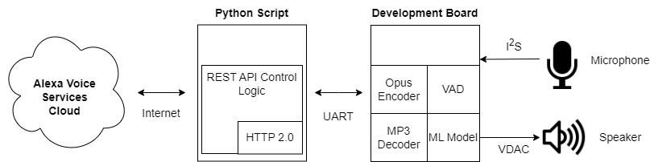
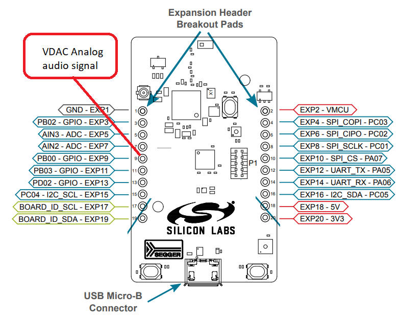
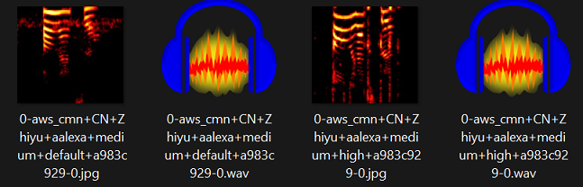

Keyword Spotting - Alexa¶
This demonstrates how to use an embedded development board as the audio source/sink for the Alexa Voice Services backend.
With this demo, “Alexa” commands may be issued to the development board’s microphone and the response will be played via the attached speaker.
Demo Video¶
The following is a video of the demo described in this tutorial:
Quick Links¶
GitHub Source - View this tutorial on Github
C++ Example Application - View this tutorial’s associated C++ example application
Machine Learning Model - View this tutorial’s associated machine learning model
Alexa Voice Services Docs - Alexa Voice Services (AVS) documentation
Analog Speaker - The recommended analog speaker used by this demo
Synthetic Keyword Dataset Generation - Describes how to generate an “Alexa” dataset using Amazon, Google, and Microsoft Clouds
Quick start¶
To quickly get this demo running, perform the following steps:
Install the MLTK Python package
Obtain a BRD2601 development kit
Obtain an analog speaker and connect the signal to the pin 9 of the development board (as well as the ground and power signals)
Install Segger J-Link (if necessary) which provides the drivers necessary for programming the development board
Run the following MLTK command to program the firmware application and “Alexa” ML model to the development board:
mltk program_app mltk_audio_classifier-audio_io-brd2601-mvp --model keyword_spotting_alexa
Download the Python script alexa_demo.py to your local PC
From the MLTK Python environment, run the script and follow the instructions for obtaining the AVS cloud credentials:
python alexa_demo.py
At this point, you should now be able to speak commands into the develop board’s microphone, which will be sent to the AVS cloud, and responses will be returned to the dev board’s connected speaker.
Try saying some of the commands:Alexa, what time is it?
Alexa, tell me a joke
Alexa, what’s 1+1?
NOTE: By default, the UART BAUD rate is 115200 which is too slow for larger Alexa responses, see the Increase Baud Rate section below for details how to increase the BAUD rate so responses from AVS may be properly played.
Content¶
This tutorial is divided into the following sections:
System Overview - Basic overview of the how the system is put together
Prerequisite Reading - Basic information about keyword spotting machine learning
Required Hardware - Details about the hardware needed to run the demo
Develop the ML Model - Details about how to create a machine learning model to detect the keyword: “Alexa”
Running the demo - Details about how to run the demo ML model and Python script
Building the C++ application from source - Details about how to build the firmware application from source
System Overview¶
The basic system overview is as follows:

A Python script runs on the local PC and communicates with the development board via UART
A user says the keyword “Alexa” to the development board’s microphone
The machine learning model running on the development detects the keyword
The development board begins compressing the microphone audio using the Opus codec and streams the audio to the Python script via UART
The development board uses a Voice Activity Detection (VAD) library to determine when the user finishes the command
The Python script sends the Opus-encoded audio to the AVS cloud
The Python scripts receives the Alexa response from the AVS cloud and forwards to the development board via UART
The development board decompresses the MP3-encoded audio and streams to the locally connected speaker via VDAC peripheral
Prerequisite Reading¶
Before continuing with this tutorial, it is recommended to review the following documentation:
Keyword Spotting Overview - Provides overview of how embedded keyword spotting works
Keyword Spotting Tutorial - Provides an in-depth tutorial on how to create a keyword spotting model
Required Hardware¶
To run the full demonstration, the following hardware is required:
EFR32xG24 development kit¶
Analog speaker with amplifier¶
“Alexa” audio is played via VDAC peripheral of the development board. As such, an analog speaker is required. An amplifier is also necessary.
While not required, this speaker provided by Adafruit is recommended.
The speaker’s analog signal should connect to pin 9 of the development board.
Pinout¶
The following pin connections are required:
Pin header Number |
Description |
|---|---|
9 |
VDAC - Speaker analog signal |
1 |
GND - Speaker ground |
20 |
3V3 - Speaker power |

Develop the ML Model¶
This demo uses the keyword spotting ML model: keyword_spotting_alexa to detect the keyword “Alexa”.
This model is based on the Temporal Efficient Neural Network (TENet) model architecture, a keyword spotting architecture with temporal and depthwise convolutions.
The following describes how the model was developed.
Create the dataset¶
The most important part of developing a machine learning model is acquiring a representative dataset.
A good, representative dataset should have numerous (e.g. 10k-1M) “positive” samples (i.e. audio clips of people saying the word “Alexa”)
and numerous “negative” samples (i.e. audio clips of people saying other words besides “Alexa”).
The larger and more diverse the dataset is, the better the model will likely perform in the field.
Synthetic dataset generation¶
Ideally, the dataset should contain samples of 10k+ people saying the word “Alexa”. However, creating such a dataset can be very expensive and time-consuming.
An alternative approach is to synthetically generate the dataset using cloud-based Text-to-Speech (TTS) services.
Refer to the Synthetic Audio Dataset Generation tutorial for how an “Alexa” dataset can be generated using the Google, Microsoft, and Amazon Clouds.
“Negative” class¶
While having a large and diverse “positive” class (i.e. samples of people saying “Alexa”) is important, it is also important to have a large “negative” class. This way, the ML model learns not only how to detect the “Alexa” keyword, but also how to reject words and noises that sound similar to the “Alexa” keyword.
Here synthetic audio dataset generation is useful as keywords that sound similar to “alexa” (e.g. alice, alexia, etc.) can be generated.
Other large, publicly available audio datasets can also be used for the “negative” class samples:
MLCommons Multilingual Spoken Words - A large and growing audio dataset of spoken words in 50 languages for academic research and commercial applications in keyword spotting and spoken term search, licensed under CC-BY 4.0
Mozilla Common Voice - An open source, multi-language dataset of voices that anyone can use to train speech-enabled applications
Class balance¶
The “positive” and “negative” classes should have approximately the same number of samples. If one class has substantially more samples then the model may not adequately learn the intricacies of each class. To help account for this, Tensorflow has the concept of class weights. The MLTK Model also provides a class_weights property to automatically balance the classes during training.
However, class weights may not work for substantially imbalanced (4x or more) datasets, which is the case for the Keyword Spotting - Alexa model. In this model’s case, the “negative” class has 10x more samples than the “positive” class.
To help account for this, the training script forces the “negative” class to have 2x the samples of the “positive” class. Then during training, all of the “negative” samples are randomly shuffled and only a subset is used for each epoch. In this way, the “negative” and “positive” classes are approximately balanced, yet the model “sees” all of the “negative” samples through the course of the full model training process.
Select the model architecture¶
Acquiring a representative dataset is the most important step in ML model development.
Another important step is defining a model architecture. A good model architecture should have the following characteristics:
Able to learn the dataset well - Ensures it will be robust in the field
Able to fit within the target hardware’s constraints - The model must be small enough to fit within the RAM/Flash memories
Able to execute within the application’s time requirements - The model’s inference time (on the target hardware) must be low so that the application is responsive (i.e. The model should execute quickly so that there is little delay after saying “Alexa”)
For this application, we choose the Temporal Efficient Neural Network (TENet) model architecture which has been shown to work well with keyword spotting applications, and, most importantly, is able to efficiently execute on our embedded device.
Determine the audio frontend parameters¶
For this keyword spotting application, we convert raw audio into a spectrogram (gray-scale 2D image) and feed the spectrogram image into the classifier ML model (TENet). See the Keyword Spotting Overview for more details.
We use the Audio Feature Generator Python package to generate the spectrogram.
This package has numerous settings that determine how the audio is converted to a spectrogram image. We want to choose these settings so that the generated spectrogram has the best quality while at the same time the ML model executes efficiently on the embedded hardware.
Typically, the larger the spectrogram’s dimensions the better its quality. However, increasing the spectrogram dimensions also increases the input size to the ML model which increases the processing time on the embedded hardware.
The MLTK features two tools to aid with the selection of the audio frontend parameters:
Audio Visualizer - Allows for adjusting the AudioFeatureGenerator settings and viewing the resulting spectrogram in real-time
Model Profiler - Allows for running and profiling the ML model on the embedded device before fully training the ML model
Audio visualizer command¶
To run the Audio Visualizer, issue the command:
mltk view_audio
AudioFeatureGenerator settings¶
For the keyword_spotting_alexa model, we use the following settings:
frontend_settings = AudioFeatureGeneratorSettings()
frontend_settings.sample_rate_hz = 16000
frontend_settings.sample_length_ms = 1200 # Use 1.2s audio clips to ensure the full "alexa" keyword is captured
frontend_settings.window_size_ms = 30
frontend_settings.window_step_ms = 10
frontend_settings.filterbank_n_channels = 108 # We want this value to be as large as possible
# while still allowing for the ML model to execute efficiently on the hardware
frontend_settings.filterbank_upper_band_limit = 7500.0
frontend_settings.filterbank_lower_band_limit = 125.0 # The dev board mic seems to have a lot of noise at lower frequencies
frontend_settings.noise_reduction_enable = True # Enable the noise reduction block to help ignore background noise in the field
frontend_settings.noise_reduction_smoothing_bits = 10
frontend_settings.noise_reduction_even_smoothing = 0.025
frontend_settings.noise_reduction_odd_smoothing = 0.06
frontend_settings.noise_reduction_min_signal_remaining = 0.40 # This value is fairly large (which makes the background noise reduction small)
# But it has been found to still give good results
# i.e. There is still some background noise reduction,
# but the actual signal is still (mostly) untouched
frontend_settings.dc_notch_filter_enable = True # Enable the DC notch filter, to help remove the DC signal from the dev board's mic
frontend_settings.dc_notch_filter_coefficient = 0.95
frontend_settings.quantize_dynamic_scale_enable = True # Enable dynamic quantization, this dynamically converts the uint16 spectrogram to int8
frontend_settings.quantize_dynamic_scale_range_db = 40.0
# Add the Audio Feature generator settings to the model parameters
# This way, they are included in the generated .tflite model file
# See https://siliconlabs.github.io/mltk/docs/guides/model_parameters.html
my_model.model_parameters.update(frontend_settings)
Profile the model¶
Before spending the time and money to fully train the ML model, it is critical that we profile the model on the embedded device to ensure it is able to efficiently execute.
This can be done using the Model Profiler.
Model profiler command¶
Plug the development board in your PC and issue the following command:
mltk profile keyword_spotting_alexa --build --device --accelerator mvp
This does the following:
The
--buildoption generates a.tflitemodel file using dummy weights (i.e. it generates a non-fully trained ML model)The
--deviceoption programs the generated.tfliteto the locally connected development boardThe
--accelerator mvpoption tells the model profiler application to accelerate the ML model with the embedded device’s MVP hardware accelerator
The pre-generated results of this profiling command may found here.
Data augmentations¶
Typically, the larger the dataset the more robust the ML model will be. Another way of increasing the size of the dataset without acquiring more samples is to dynamically augment the audio samples during training.
The keyword_spotting_alexa.py ML model augmentations are implemented in the audio_pipeline_with_augmentations() function. This function does the following:
Uses the audiomentations Python library to apply the various augmentations
Pads the samples with 1s of silence, this helps the AudioFeatureGenerator’s noise reduction block to “warm up” when generating the spectrogram
Adds background audio recorded from the development board’s microphone - This helps to make the dataset samples sound as if they were recorded by the dev board’s mic
Randomly adds other background noises such as conferences, offices, restaurants, etc.
Randomly increases/decreases the sample volume
Randomly crops “known” samples and uses the crop sample as an “unknown” sample. This should help the model to not trigger on partially buffered keywords, the model should only trigger when the keyword has been fully buffered
Dump augmentations¶
In the keyword_spotting_alexa.py model specification file, if you uncomment the line (near the middle of the script):
# Uncomment this to dump the augmented audio samples to the log directory
# DO NOT forget to disable this before training the model as it will generate A LOT of data
#data_dump_dir = my_model.create_log_dir('dataset_dump')
Then, during training, the dynamically augmented audio samples and corresponding spectrograms will be dumped to the specified directory.
This way, you can listen to the augmented audio samples and view their corresponding spectrogram images.
The dumped audio files and spectrogram images will appear in the dump directory similar to:

HINT: See the Model Debugging tutorial for how easily debug the model Python script and view the dumped samples.
Train the model¶
Once the parameters are configured and it is determined that the profiled model runs efficiently on the embedded hardware, it is time to fully train the model. The model can either be trained locally or on a remote cloud machine.
Local Training¶
See the Local Model Training guide for details on how to train the model on your local machine.
mltk train keyword_spotting_alexa
Remote Training¶
See the Remote Model Training guide for details on how to train the model on a remote cloud machine.
mltk ssh train keyword_spotting_alexa
HINT: This model can be trained in ~2hrs using vast.ai.
Be sure to select an instance with at least 48 CPUs (only 1 GPU is needed). Also be sure to update the n_jobs in tf_dataset_utils.parallel_process() in keyword_spotting_alexa.py, e.g.:
features_ds, pool = tf_dataset_utils.parallel_process(
features_ds,
audio_pipeline_with_augmentations,
dtype=np.int8,
#n_jobs=84 if subset == 'training' else 32, # These are the settings for a 256 CPU core cloud machine
n_jobs=72 if subset == 'training' else 32, # These are the settings for a 128 CPU core cloud machine
#n_jobs=44 if subset == 'training' else 16, # These are the settings for a 96 CPU core cloud machine
#n_jobs=50 if subset == 'training' else 25, # These are the settings for a 84 CPU core cloud machine
#n_jobs=36 if subset == 'training' else 12, # These are the settings for a 64 CPU core cloud machine
#n_jobs=28 if subset == 'training' else 16, # These are the settings for a 48 CPU core cloud machine
#n_jobs=.65 if subset == 'training' else .35,
#n_jobs=1,
name=subset,
)
Run the trained model¶
After the model is trained, a model archive file will be generated.
This archive file contains the .tflite model file which should be programmed to the embedded device.
The pre-trained model archive used by this tutorial may be found at: keyword_spottong_alexa.mltk.zip
To verify that the model works, the classify_audio MLTK command may be used. This will program the trained model to the development board and stream the dev board’s microphone audio into the model. With this, you can issue keywords to the dev board and see the model’s classification results in real-time.
Classify audio command¶
Issue the following command to run the audio_classifier app with your trained ML model on the development board:
mltk classify_audio keyword_spotting_alexa --device --accelerator mvp --verbose
This does the following:
The
--deviceoption programs the trained.tfliteto the locally connected development boardThe
--accelerator mvpoption tells the classify_audio application to accelerate the ML model with the embedded device’s MVP hardware acceleratorThe
--verboseoption provides more verbose model classification results
Run the demo¶
With the model fully trained, we can now run it in the demo application.
See the Quick Start for more details.
When you get to step 4), change the model argument to point to your newly trained model, e.g.:
mltk program_app mltk_audio_classifier-audio_io-brd2601-mvp --model ~/Desktop/my_model.mltk.zip
NOTE: Internally, this demo uses the UartStream Python utility to communicate with the development board via UART.
Build C++ application from source¶
This “Alexa” demo is based on the audio_classifier example application.
To build this application from source, execute the following steps:
Configure the Visual Studio Code or CMake Command Line development environment NOTE: The application needs to be built for embedded
Create/modify the file:
<mltk repo root>/user_options.cmakeAdd the following to
<mltk repo root>/user_options.cmakemltk_set(MLTK_PLATFORM_NAME brd2601) mltk_set(TFLITE_MICRO_ACCELERATOR mvp) mltk_set(MLTK_STACK_SIZE 32768) # The Opus audio codec library requires a large stack mltk_set(AUDIO_CLASSIFIER_ENABLE_AUDIO_IO ON) mltk_set(AUDIO_CLASSIFIER_MODEL "<path to your trained Alexa .mltk.zip model archive file>")
Invoke the CMake target:
mltk_audio_classifier_download(see Visual Studio Code or CMake Command Line for more details)
These steps will:
Build the audio_classifier
For the BRD2601 platform
With MVP hardware acceleration
With your trained ML model
Using the “Audio I/O” feature (used to communicate with the demo Python script)
Program the built app with ML model to the development board
After the app is programmed, run the demo Python script which will communicate with the app via UART.
Increase the BAUD rate¶
By default, the UART BAUD rate is set to 115200. This rate is fast enough for simple Alexa responses.
However, for longer responses such as music or stories this rate is not fast enough.
Execute the following steps to increase the BAUD rate to 460800 which is fast enough for all Alexa responses.
See WSTK Virtual COM port baudrate setting for how to configure the development board’s VCOM port baud rate setting.
In the dev board’s “admin console”, issue the command:serial vcom config speed 460800
Update the model archive with a new parameter:
baud_rate=460800using the command (changekeyword_spotting_alexato your model’s.mltk.zipfile path):mltk update_params keyword_spotting_alexa baud_rate=460800
Re-program the app (or rebuild the app from source):
mltk program_app mltk_audio_classifier-audio_io-brd2601-mvp --model keyword_spotting_alexa
Run the demo Python script with the
--baudargument, e.g.:python alexa_demo.py --baud 460800